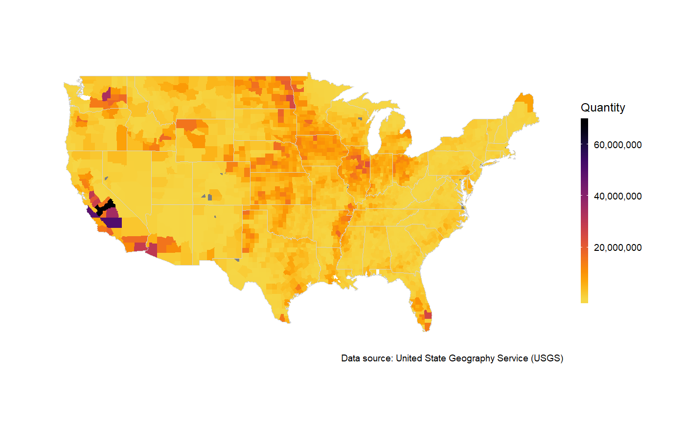
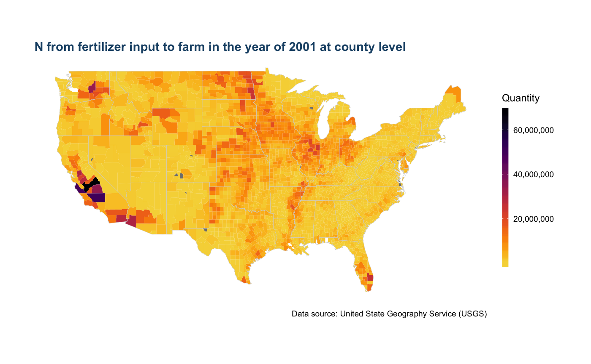
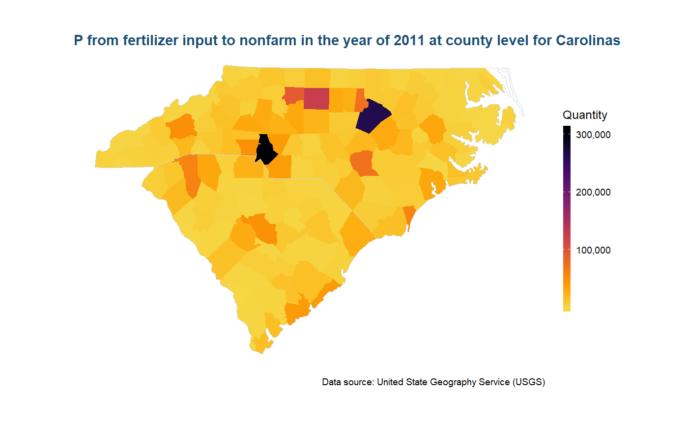

Retrieve, Summarize and Visualize the Fertilizer Data in USA
Provides a user-friendly API to further dig in County-Level Fertilizer data in USA, provided by USGS.
Quick Start
Retrieve fertilizer data
Year <- 2008
Nutrient <- "N"
Input_Type <- "fertilizer"
# retrieve data.
plot_data <- get_data(data = us_fertilizer_county, years = Year, nutrient = Nutrient,
input_type = Input_Type, combine_state_county = TRUE)
head(plot_data)
#> # A tibble: 6 x 12
#> FIPS State County ALAND AWATER INTPTLAT INTPTLONG Quantity Year
#> <chr> <chr> <chr> <dbl> <dbl> <dbl> <dbl> <dbl> <chr>
#> 1 01001 AL Autauga,… 1.54e9 2.58e7 32.5 -86.6 783984 2008
#> 2 01003 AL Baldwin,… 4.12e9 1.13e9 30.7 -87.7 4948455 2008
#> 3 01005 AL Barbour,… 2.29e9 5.09e7 31.9 -85.4 1171588 2008
#> 4 01007 AL Bibb, AL 1.61e9 9.29e6 33.0 -87.1 141669 2008
#> 5 01009 AL Blount, … 1.67e9 1.52e7 34.0 -86.6 1206109 2008
#> 6 01011 AL Bullock,… 1.61e9 6.06e6 32.1 -85.7 629577 2008
#> # ... with 3 more variables: Nutrient <chr>, Farm.Type <chr>,
#> # Input.Type <chr>Summarize and plot data.
Example 1: Find out the top 10 counties with most nitrogen appliation in 2008.
# plot the top 10 nitrogen application in year 2008.
plot <- plot_data %>%
top_n(10, Quantity) %>%
ggplot(aes(x=reorder(County, Quantity), Quantity, fill = Quantity))+
scale_fill_gradient(low = "blue", high = "darkblue")+
geom_col()+
ggtitle(paste("Top 10 counties with most N fertilizer application in the year of", Year)) +
scale_y_continuous(name = "Nitrogen from commecial fertilization (kg)")+
scale_x_discrete(name = "Counties")+
coord_flip()+
theme_bw()
plot
Examples 2: Visualize the fertilizer data in US maps.
Year = 2001
Nutrient = "N"
Farm_Type = "farm"
Input_Type = "fertilizer"
level = "county"
# draw the map
us_plot <- map_us_fertilizer(data = us_fertilizer_county, Year = Year, Nutrient = Nutrient,
Farm_Type = Farm_Type, Input_Type = Input_Type,
viridis_palette = "inferno", level = level)
us_plot
As the maps are actually ggplot2 objects, all the common API for ggplot2 can be used here. We can also add a title for the map to make it more informative.
us_plot +
ggtitle(paste(Nutrient, " from ", Input_Type, " input to ", Farm_Type, " in the year of ",Year,
" at ", level, " level",sep = ""))
For more details about mapping fertilizer data, please see this vignettes of plotting us maps of fertilizer.
Example 3: Visualize the fertilizer data for certain states or counties.
Year = 2011
Nutrient = "P"
Farm_Type = "nonfarm"
Input_Type = "fertilizer"
level = "county"
State = c("NC", "SC")
# draw the map
state_plot <- map_us_fertilizer(data = us_fertilizer_county, Year = Year, Nutrient = Nutrient,
Farm_Type = Farm_Type, Input_Type = Input_Type, State = State,
viridis_palette = "inferno", level = level) +
ggtitle(paste(Nutrient, " from ", Input_Type, " input to ", Farm_Type, " in the year of ",Year,
" at ", level, " level for Carolinas",sep = ""))
state_plot
For more details about mapping fertilizer data, please see this vignettes of plotting state maps
Code of conduct
Please note that this project is released with a Contributor Code of Conduct. By participating in this project you agree to abide by its terms.
Comments and Questions
If you have any problems or questions, feel free to open an issue here.